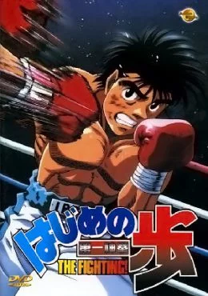

Makunouchi Ippo es un chico honrado y humilde, al que le gusta mucho ayudarle con sus deberes a su madre. Hasta el momento, no tenía ninguna meta u objetivo claro en la vida, pero mientras un día estaba siendo molestado por unos pandilleros, se encuentra con un campeón nacional de boxeo japonés, Mamoru Takamura, quien lo defiende de los abusones y lo regaña por lo patético que se ve al no defenderse. A partir de este punto Takamura le enseña el arte del boxeo profesional e Ippo se ve inspirado tras ello. La historia dará lugar a un nuevo campeón sin lugar a dudas.